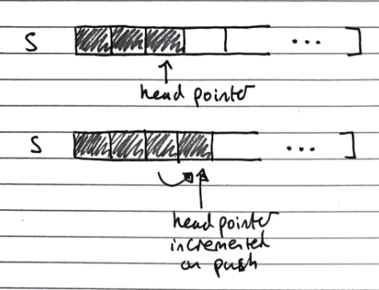
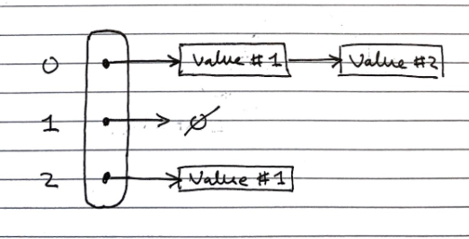
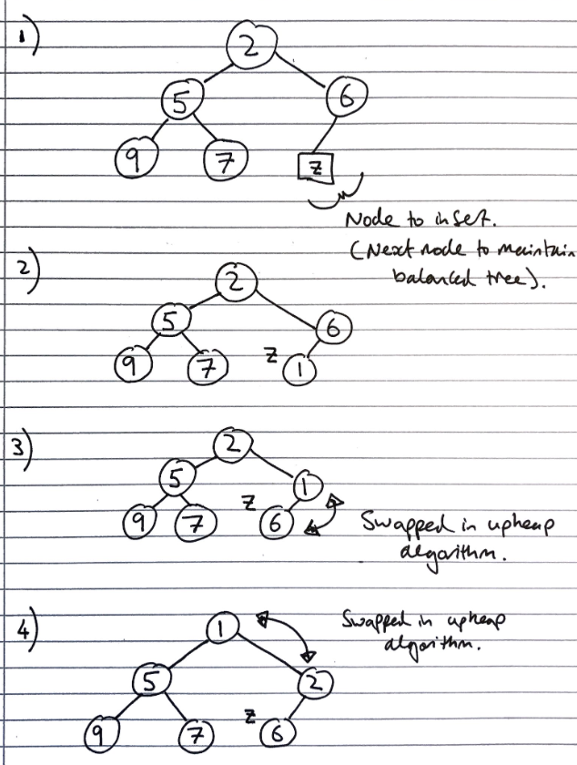
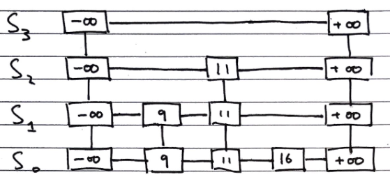
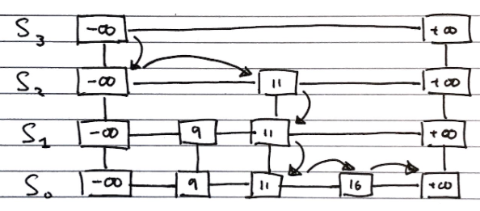
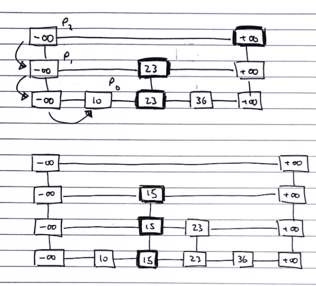

Arrays and Lists
Abstract Data Type (ADT)
An abstract data type (ADT) is an abstraction of a data structure that specifies
- The data that is stored.
- The operations that can be performed on said data.
- The error conditions associated with said operations.
The ADT does not define the implementation of the data structure but seeks to describe what it does.
Arrays (ADT)
Arrays are indexable, fixed length, sequence of variables of a single type (homogenous).
- They are homogenous as it is otherwise much harder to calculate the memory address of the data to look up given an index.
Arrays have the following fundamental operations:
| Fundamental operation | Value returned | Effect |
|---|---|---|
get(i) |
The item at the ith index in the array |
- |
set(i,e) |
- | Set the item at the ith index in the array to the value e |
size() |
The size of the array | - |
isEmpty() |
Whether the array is empty | - |
This table is an overview of the time complexity of certain operations for an array.
| Methods/Operations | Time | Reason |
|---|---|---|
get(i), set(i,e) |
O(1) | Indexable |
size() |
O(1) | Arrays are of fixed size when created, they know their size. |
isEmpty() |
O(n) | Has to check every index |
| Insertion, Deletion | O(n) | Fixed length – have to shift proceeding elements up or down to accommodate inserted/deleted element |
| Resizing the array | O(n) | Fixed length – have to create a larger array, then copy contents over. |
Implementation
Arrays can be concretely implemented by allocating a contiguous section of memory, with cells being indexable by memory location, as the data at an index can be found at:
[S + D \cdot I]
where \(S\) is the pointer to the start of the array, \(D\) is the size of the data type, and \(I\) is the index.
Lists (ADT)
Lists are a finite sequence of ordered values, which may contain duplicates (more abstract than an array). A list is called homogenous if every element it contains is of the same type.
Array based implementation
Concrete implementation of lists
Arrays provide all the required properties, except being able to change size. To “grow” an array, we make a new array of a larger size, and copy all the data across to it.
To do this, we need to decide how large the new array should be. There are two strategies which are commonly used to do this:
- Incremental strategy – when the capacity is exceeded, grow it by a constant number of elements c
- Amortized (average) time of each push is Ω(n2)
- Space grows linearly, so quite space efficient
- Doubling strategy – when the capacity is exceeded, double it
- Amortized (average) time of each push is Ω(n)
- Space grows exponentially, so less space efficient
Array based implementations have the fundamental operations
| Fundamental operation | Value returned | Effect |
|---|---|---|
get(i) |
The item at the ith index in the list |
- |
set(i,e) |
- | Set the item at the ith index in the list to the value e |
add(e) |
- | Add the value e to the end of the list |
remove(i) |
- | Remove the value at the ith index of the list |
size() |
The size of the array | - |
isEmpty() |
Whether the array is empty | - |
Positional lists (ADT)
Positional lists are a “general abstraction of a sequence of elements with the ability to identify the location of an element, without indices”
“Data Structures and Algorithms in Java”, Goodrich, Tamassia, Goldwasser
A “position” is a marker within the list, which is unaffected by changes elsewhere. For example, insertion or deletion of other elements doesn’t change it, the only time it changes is when it itself is deleted.
Positional lists have the fundamental operations
| Fundamental operation | Value returned | Effect |
|---|---|---|
addFirst(e) |
- | Add the value e to the beginning of the list |
addLast(e) |
- | Add the value e to the end of the list |
addBefore(p,e) |
- | Add the value e below the position p in the list |
addAfter(p,e) |
- | Add the value e after the position p in the list |
set(p,e) |
- | Set the item at the position p in the list to the value e |
remove(p) |
- | Remove the item at the position p in the list |
It is generally implemented as a doubly linked list.
Linked lists (ADT)
Linked lists are a collection of elements that can be accessed in a sequential way, meaning they are not indexable. Additional resource.
This means they can more easily implement non-homogenous lists, as opposed to using arrays, as cells can be of different “sizes”, so different data types requiring different amounts of data can be stored.
Singly linked lists
Concrete implementation of linked lists
Singly linked lists are a sequence of nodes, each of which stores both a value and a pointer to the next node in the sequence. There is a pointer to the first node in the sequence, and the final node in the sequence is a null pointer ∅
| Method/Operation | Time | Reason | Description |
|---|---|---|
set(p,e), addAfter(p,e), get, |
O(n) | Need to go through the list from head until index. |
addFirst(e) |
O(1) | Quick to add items to head because we have a pointer reference |
remove(p) (Deletion), Insertion |
O(n) | Similar to getting and set, but pointers are changed instead of values, either to bypass or include a new node in the sequence. |
Singly linked lists have the fundamental operations
| Fundamental operation | Value returned | Effect |
|---|---|---|
addFirst(e) |
- | Add the value e to the beginning of the list |
addAfter(p,e) |
- | Add the value e after the position p in the list |
set(p,e) |
- | Set the item at the position p in the list to the value e |
remove(p) |
- | Remove the item at the position p in the list |
Doubly Linked Lists
Concrete implementation of positional lists and linked lists
Doubly linked lists are a sequence of nodes, each of which stores both a value and a pointer to both the next and the previous node in the sequence. At each end there are special header and trailer nodes, which are just references to the first and last nodes in the sequence
Similarly to singly linked lists, getting, setting, insertion, deletion all O(n) – need to iterate from start to end of the list to get to the position of the item.
Head and tail operations are O(1) – head and tail references (pointers) and the list can be traversed both forwards and backwards.
Doubly linked lists have the same fundamental operations as positional lists, as they are a concrete implementation of them
Analysis of algorithms
Running time
To assess how good an algorithm is, we often use the metric of running time compared with the size of the input to the algorithm.
- Worst case \(O(n)\) – which we usually focus on, since it is both easy to analyse and useful
- Average Case \(\Theta(n)\) – often more difficult to assess
- Best Case \(\Omega(n)\) – often not sufficiently representative of the algorithm
Experimental trials
One of the ways to assess the running time is to write a program implementing the algorithm, then running for inputs of different sizes. Then fit curves to a plot of the results to try to classify the algorithm.
This has a few drawbacks though
- Need to implement the algorithm – might be difficult.
- Many ways to implement – reason for analysis is to decide which one to implement
- Not all inputs can be covered – not representative
- Dependent on machine hardware and software environments – difficult to equate between different tests, same specs and same environment needed.
Theoretical analysis
Theoretical analysis is given a high-level description of the algorithm (not a full implementation), expressing the running time as a function of the input size \(n\).
Pseudocode is used for this high-level description, which lies between English prose and program code. It has no formal syntax, and allows omission of some aspects of the implementation to make analysis easier.
This has the benefits of:
- Allowing all possible inputs to be covered
- Being independent of machine hardware and software environments, so easier to equate between different tests
Common functions of running time

Random Access Machine (RAM) model
To analyse programs, we use a simplified model of how computers work to help think about the time an high level operation takes to run by expressing it as fundamental operations which are equivocal to real computers.
In the RAM model, we consider a computer with (assumptions):
- A single CPU executing a single program
- An arbitrarily large indexable array of memory
- A set of registers memory can be copied into
- Basic arithmetic and memory allocation operations
Generally, we tend to abstract beyond this model to just consider a set of primitive operations (usually single lines of pseudocode) that take constant time irrespective of input size in the RAM model.
We then analyse performance by counting the number of operations needed, as their number is proportional to running time.
This allows us to express the running time of the program as being between the best and worst cases of number of operations needed, multiplied their running time
- Let \(T(n)\) denote the running time, \(b(n)\) the best case, \(w(n)\) the worst case, and \(t\) the time taken for 1 primitive operation
- The running time is bounded as \(t \times b(n) \leq T(n) \leq t \times w(n)\)
- This metric of running time \(T(n)\) is not dependent on machine hardware or software environment – it is an intrinsic property of the algorithm.
Asymptotic Algorithm Analysis
Asymptotic algorithm analysis is a way we can take pseudocode and use it to analyse an algorithm.
We most commonly conduct worst case analysis, \(O(n)\), but there is also \(\Omega(n)\) (best case) and \(\Theta(n)\) (average case).
Big-O Notation
Big-O is a way of quantifying the running time of an algorithm, allowing easy comparison. Given the functions \(f(n)\) and \(g(n)\), we say that \(f(n)\) is \(O(g(n))\) if:
\[\begin{align} &f(n) \leq g(n) \cdot c,& &\text{for all } n \geq n_0, n \in \mathbb{N}& \\ && &\text{with some positive} \\ && &\text{constants } c \text{ and } n_0 \end{align}\]Informally, this means that \(f(n)\) is “overtaken” by \(g(n)\) for all values above some threshold \(n _0\) usually we consider \(n \rightarrow \infty\), allowing scaling by a linear factor \(c\).
This can be phrased as “\(f(n)\) is \(O(g(n))\) if \(g(n)\) grows as fast or faster than \(f(n)\) in the limit of \(n \rightarrow \infty\)” (Source)
Big-O notation, thus, gives an upper bound on the growth rate of a function as its input size n tends to infinity. Hence, \(f(n)\) is \(O(g(n))\) means that the growth rate of \(f(n)\) is no greater than that of the growth rate of \(g(n)\).
Big-O of a Function
Informally, the Big-O of a function is the term that grows the fastest, as it will come to dominate for a very large n, and we then just pick n0 where that term is dominating, and use c to shift the function to fit.
So, if \(f(n)\) is a polynomial of degree \(d\), then \(f(n)\) is \(O(n^d)\), as we can drop all but the fastest growing term.
When writing Big-O, we:
- Try to use the smallest possible class of functions which fulfils the criteria.
- E.g. O(n) not O(n2), whilst both technically are Big-O of linear functions. (Why is O(n2) valid for linear functions?)
- Use the simplest expression of the class.
- E.g. O(n) not O(5n).
Worst Case Analysis \(O(n)\)
To prove something is \(O(f(n))\), we need to show that we can pick a \(c\) and an \(n\) which satisfy the condition.
To prove something is not ,\(O(f(n))\) we show that there is no \(c\) for any arbitrarily large \(n_0\) which satisfies the condition.
To analyse
- Consider the worst-case number of primitive operations that the algorithm could require to run as a function of its input size.
- Express this derived function in Big-O notation.
An example, of this being formally calculated (taken from Data Structures and Algorithms in Java, Goodrich, Tamassia, Goldwasser) is shown below:
Consider the function \(2n + 10\). To show that it is \(O(n)\), we take:
\[\begin{align} 2n + 10 &\le c \cdot n \\ cn-2n &\ge 10 \\ n &\ge \frac{10}{c-2} \end{align}\]Hence, picking c = 3 and n0 = 10 the condition is satisfied.

Big-Omega \(\Omega(n)\)
\(\Omega(n)\) looks at best cases. \(f(n) = \Omega(g(n))\) if
\[\begin{align} &f(n) \ge g(n) \cdot c,& &\text{for all } n \geq n_0, n \in \mathbb{N}& \\ && &\text{with some positive} \\ && &\text{constants } c \text{ and } n_0 \end{align}\]This means that \(g(n)\cdot c\) will always be lesser than or equals to \(f(n)\) after a certain threshold \(n_0\). You can think of it as a lower bound to \(f(n)\), where you’re saying that \(f(n)\) cannot get any “better/faster” than this.
Big-Theta \(\Theta(n)\)
\(\Theta(n)\) looks at average cases. We say that \(f(n) = \Theta(g(n))\) when \(f(n)\) is asymptotically equal to \(g(n)\), this happens if and only if
\[f(n) = \Theta(g(n)) \iff f(n) = O(g(n)) \land f(n) = \Omega(g(n)) \\ \begin{align}\\ &g(n)\cdot c_\Omega \le f(n) \le g(n) \cdot c_O,& &\text{for all } n \geq n_0, n \in \mathbb{N}& \\ && &\text{with some positive} \\ && &\text{constants } c_O, c_\Omega, \text{ and } n_0 \end{align}\]Here this means that for a specific \(g(n)\), we can scale it by two variables \(c_O\) and \(c_\Omega\) and \(f\) will be always “fit in-between” the two scaled \(g\)s after a certain threshold \(n_0\).
Recursive algorithms
Definition
Recursion can be defined in various ways:
“When a method calls itself”
– Data Structures and Algorithms in Java, Goodrich, Tamassia, Goldwasser
“A method which is expressed in terms of calls to simpler cases of itself, and a base case”
‚Äì CSRG, Edmund Goodman (It‚Äôs a recursive reference, get it?) üôÉ
Structure
Recursive functions tend to include two main components:
- Base cases
- Recursive calls
Base cases tend to be simple input values where the return value is a known constant, so no recursive calls are made. They are required for a recursive function to finish evaluating, so there must be at least one
Recursive calls are ones to the same recursive function making the call, with a simpler input (since it must “move towards” the base case for it to ever finish evaluating)
We can visualise recursion by drawing diagrams of functions, with functions as boxes and arrows indicating calls and return values. This is fairly self-explanatory.
Examples
We can often express many functions both iteratively and recursively, such as a binary search, which can be implemented recursively with:
- The input being a list,
- The recursive call being the half of the list the search has been narrowed down to
- The base cases being a single item, returning the index of that item if it is the item being searched for, or an indicator of absence if not
See the page on general algorithms for the pseudocode for a recursive binary search
Types of recursion
Linear recursion. Each functional call makes only one recursive call (there may be multiple different possible calls, but only one is selected), or none if it is a base case.
Binary and multiple recursion. Each functional call makes two or multiple recursive calls, unless it is a base case.
Divide and Conquer
A design pattern that enables efficient problem solving. It consists of the following 3 steps:
- Divide: Divide input data into 2 or more disjoint subsets unless the input size is smaller than a certain threshold – if it is smaller then solve the problem directly using a straightforward method and return the solution obtained.
- Conquer: Recursively solve the subproblems associated with each subset.
- Combine: Take the solutions to the subproblems and merge them into a solution to the original problem.
This design pattern is widely used in algorithms like merge sort and quick sort.
Stacks and Queues
Stacks (ADT)
Stacks are a “Last in, first out” (LIFO) data structure, with both insertions and deletions always occurring at the front of the stack.
These insertions and deletions are the fundamental operations of the stack, called pushing and popping respectively.
There is an edge case of popping from an empty stack, which normally either returns null or throws an error
Stacks have the fundamental operations:
| Fundamental operation | Value returned | Effect |
|---|---|---|
push(e) |
Add the value e to the top of the stack |
- |
pop() |
The most recently pushed item from the top of the stack | Remove the most recently pushed item from the top of the stack |
size() |
The size of the stack | - |
isEmpty() |
Whether the stack is empty | - |
Array Based Implementation
Index of head stored, and incremented/decremented on pushing/popping operations
-
O(n) space complexity
-
O(1) time complexity of fundamental operations

Queues (ADT)
Queues are a “First in, first out” (FIFO) data structure, with insertions occurring at the rear and removals at the front of the queue.
These insertions and deletions are the fundamental operations of the stack, called enqueueing and dequeuing respectively.
There is an edge case of dequeuing from an empty queue, normally either returns null or throws an error
Queues have the fundamental operations
| Fundamental operation | Value returned | Effect |
|---|---|---|
enqueue(e) |
Add the value e to the tail of the queue |
- |
dequeue() |
The least recently enqueued item from the head of the queue | Remove the least recently enqueued item from the head of the queue |
size() |
The size of the queue | - |
isEmpty() |
Whether the queue is empty | - |
Array Based Implementation
Uses and array with data wrapping (so like using an array in a Queue class with extra fields/properties) around as it is added and removed. Both the index of the head f and the size of the queue s need to be stored.
The rear of the queue (index to insert to next) is (f + s) mod N, with N as the array size

- O(n) space complexity
- O(1) time complexity of fundamental operations
Maps, Hash tables and Sets
Maps (ADT)
Maps are a “searchable collection of key-value entries”
Data Structures and Algorithms in Java, Goodrich, Tamassia, Goldwasser.
They cannot contain duplicate keys, as then they would not be able to unambiguously look up values by their keys
Maps have the fundamental operations:
| Fundamental operation | Value returned | Effect |
|---|---|---|
| contains(k) | Whether the key k is in the map |
- |
| get(k) | The value associated with the key k, or null if it is not in the map |
- |
| put(k,v) | - | Add the key-value pair k,v to the map |
| remove(k) | - | Remove the key-value pair of k from the map |
| size() | The number of key-value pairs stored in the map | - |
| isEmpty() | Whether the map is empty | - |
Sometimes additional operations for getting lists of all keys or all values are included
There are two common concrete implementations:
- List based implementation
- \(O(n)\) lookup and insertion, as the whole list needs to be iterated over to check for duplicates
- \(O(n)\) space complexity, as there are no duplicates
- Hash table based implementation
- \(O(1)\) lookup and insertion time, as they can be directly indexed
- \(O(k \cdot n)\) space complexity (still linear with number of items, but larger by a big constant factor)
Hash tables
Concrete implementation
Hash tables are a time efficient implementation of the Map abstract data type
To look up keys in \(O(1)\) time, we want essentially want to be able to index an array of them, but the space of keys are far too large to conceivably keep just one element in the array for each key.
Hash functions
We can use a “hash function” to reduce the size of the keyspace, so we can used the hashed outputs of keys for indices in the array storing the map. \(h : keys \rightarrow indices\) \(h\) maps keys of a given type to integers in a fixed interval \([0, N-1]\) where \(N\) is the size of the array to store the items in (bucket size).
Modern implementations of hash functions are very complicated, and often involve two phases
- Mapping keys to integers with a hash code \(h_1\)
- Reducing the range of those integers with a compression function \(h_2\)
But simpler ones exist, for example \(h(x) = x \!\!\mod \!N\)
Choosing \(N\)
In general, every key \(x\) that shares a common factor with \(N\) (the number of buckets) will be hashed to a multiple of this factor.
Therefore, to minimise collisions it is best to choose a \(N\) such that it has very few factors. Hence large prime numbers are often used for this very reason.
Memory address
Java implements hash functions for all objects with the .hashCode() method, giving a convenient way to implement hashing.
The .hashCode() method is dependent on the memory address of the object storing the key, which is then cast to an integer. This then may be resized using a reduction function to map it to the correct size of the table may still be required.
Integer cast
Taking the bits encoding the object storing the key, and re-interpreting them as an integer. This is only suitable for keys of fewer or equal to the number of bits in the integer type (i.e. primitives: byte, short, int, float)
Component sum
The process is:
- Partition the bits of the key into a number of fixed length components (e.g. 8 bits)
- Sum together the components, discarding overflows
This is suitable for keys of a greater number of bits than the integer type (e.g. long and double)
Polynomial accumulation
The process is:
-
Partition the bits of the key into a number of fixed length components (e.g. 8 bits), and name them \(a_0, a_1, ..., a_{n-1}\) respectively
-
Evaluate the polynomial: \(p(z) = a_0 + a_1 \cdot z + a_2 \cdot z^2 + ... + a_{n-1} \cdot z^{n-1}\) at a fixed value \(z\), ignoring overflows
This can be evaluated quickly using Horner’s rule
This is especially suitable for strings, with \(z=33\) giving at most \(6\) collisions from \(50,000\) English words
Java hash implementations
Java implements hash functions for all objects with the .hashCode() method, giving a convenient way to implement hashing, but a reduction function to map it to the correct size of the table may still be required.
Additionally, “You must override hashCode() in every class that overrides equals(). Failure to do so will result in a violation of the general contract for Object.hashCode(), which will prevent your class from functioning properly in conjunction with all hash-based collections, including HashMap, HashSet, and Hashtable.” (Effective Java, Joshua Bloch)
This is because the default .hashcode() method is dependent on the object’s location on memory, which is the same as the default implementation of the .equals() method. Then, if the .equals() method is changed to be dependent on an object’s internal state, two objects could be equal, but have different hash codes, which violates the property of hashing that two equal objects must have the same hash code, as otherwise it is non-deterministic. Hence, the .hashcode() method should always be updated to hash equal objects to the same hash code to maintain consistency and avoid difficult to debug conceptual errors. This is not a requirement, and the code will still compile if it is not done, but it is very inadvisable not to do so.
Collisions
Collisions are when two different keys are mapped to the same index by the hash function. Since we cannot store duplicate keys unambiguously in a map, we need a protocol to resolve this.
When colliding items are placed in different cells in the table, it is called open addressing, or open-bucket hashing, and when they are put in a separate data structure it is called closed addressing, or closed-bucket chaining (with linear probing and separate chaining being examples of both respectively) additional link.
Common approaches to resolving collisions are:
- Separate chaining
- Linear probing
- Double hashing
Separate Chaining (closed-bucket)
In separate chaining, each index in the array can contain a reference to a linked list.
- Whenever a key is mapped to that index, the key-value pair is added to the linked-list.
- If there are duplicates, we iterate over the chain till we find the key, or reach the end.
This has the drawback of requiring additional memory space for each linked list

Linear Probing (open-bucket)
Linear probing handles collisions by placing the colliding item in the next available table cell, wrapping around if necessary.
Searching
As with the linked list, searching is done by iterating over the next cells, stopping when
- The item is found
- An empty cell in the table is found
- N cells have been unsuccessfully (cannot find key) probed.
// Psuedocode
Algorithm get(k)
i <- h(k) // h = hash function
p <- 0
repeat
c <- A[i] // A is the table
if c = empty
return null
else if c.getKey() = k // We found our item
return c.getValue()
else
i <- (i + 1) mod N // mod N takes care of wrap arounds
p <- p + 1
until p = N // stop if we have repeated N times
return null
This has the drawback of colliding items “lumping together”, which can cause many items needed to be iterated over in a probe.
Removing
To remove an item, we cannot just set it to null again, as that would mean it stops probing, even though there might be subsequent elements. Instead, we replace it with a DEFUNCT element, which is just skipped over when probing.
- Search for an entry with key k
- If k is found, we replace it with
DEFUNCTand we return the value of the item with key k - Else we return null
Double Hashing (open-bucket)
Double hashing handles collisions by re-hashing the key with a new hash function
If cell \(h(k)\) is occupied and not our key, we try \([h(k) + i \cdot f(k)] \!\!\mod \!N, \; i \in \mathbb{Z}\)
- \(h\) and \(f\) are hashing functions, and \(f(k)\) cannot have 0 values.
- \(N\) must be a prime to allow probing of all cells.
As before, there are many implementations of the hash function, but \(f(k)= q-k \!\!\mod\!q, \;s.t.\; q<N, q \in primes\) is normally used.
- If \(f(k) = 1\) then we have linear probing.
Searching is similar to linear probing, but when iterating we look at the hash value for \(i = 1,2,3,\ldots\) rather than just the next index in the table. This helps avoid the issue of colliding items “lumping together” as in linear probing.
Resizing a hash table
As with arrays, we create a new table of a larger size, then iterate over every index in the table, and apply the standard add operation to add it to the new one (re-hashing).
Again, similarly to arrays, the new size of the table can be picked from various algorithms, most commonly constant or exponential growth.
Performance of Hashing
The load factor of a hash table is the ratio of the number of items it contains to the capacity of the array \(\alpha = \frac{n}{N}\).
- If this approaches \(1\), the table becomes time inefficient to lookup in, so we often re-size the table whenever it exceeds a certain value, e.g. \(0.75\)
- If this approaches \(0\), then the table is mostly empty, so is space inefficient, so we try to avoid tables of less than a certain value, e.g. \(0.5\)
The time complexity of insertion and lookup is:
- \(\Theta(1)\) best case
- \(O(n)\) worst case – when all keys inserted into the map collide
- “Expected” number of probes with open addressing is \(\frac{1}{1-\alpha}\)
In practice, hash tables are a very efficient implementation of maps assuming the load factor is not very close to \(1\)
Experiments show that as long as \(\alpha \lt 0.9\), there should be no problem with speed. However, for \(\alpha \gt 0.9\) the number of collisions increase and becomes slower.
Sets (ADT)
Sets are “an unordered collection of elements, without duplicates that typically supports efficient membership tests.”
Data Structures and Algorithms in Java, Goodrich, Tamassia, Goldwasser
These are the same as sets in mathematics.
If you want to pull request more stuff here, please do - but I’m not too sure how much more depth is needed
| Fundamental Operations | Value returned | Effect |
|---|---|---|
add(e) |
- | Add the element e to S (if not already present) |
remove(e) |
- | Remove the element e from S (if it is present). |
contains(e) |
Whether e is an element of S | - |
iterator() |
An iterator of the elements of S | - |
union(s2) |
- | Updates S to also include all elements of set T, effectively replacing S with S ∪ T |
intersection(s2) |
- | Updates S to only include elements also in set T, effectively replacing S with S ∩ T |
difference(s2) |
- | Updates S to not include any of the elements of set T, effectively replacing S with S \ T |
And alternate definition for set operations can instead define a third set structure and fill it with the result of S *set operation* T – this way we don’t alter S
union :: (s1, s2) -> s3intersection :: (s1, s2) -> s3difference :: (s1, s2) -> s3
Implementations
There are two common concrete implementations. These are essentially the same as for maps, however, the key and the value are taken to be the same.
- Linked lists
- Hash set
List based
In the list implementation we store elements sorted according to some canonical ordering. This is important for the set operations to be more time efficient.
Generally, the space complexity is \(O(n)\), without overhead of empty cells. Since sets are not indexable, linked lists can be used, offering efficient re-sizing.
We need to iterate over each element in the list to lookup items, \(O(n)\) time complexity, which is not efficient, but for most more complex set operations, this becomes less of a drawback.
Generic Merging Algorithm
Set operations can be implemented using a generic merge algorithm.
Algorithm genericMerge(A,B)
S <- empty set
while !A.isEmpty() and !B.isEmpty()
// until either of the arrays is empty
a <- A.first().element()
b <- B.first().element
if a < b
aIsLess(a, S)
A.remove(A.first())
else if b < a
bIsLess(b, S)
B.remove(B.first())
else // b == a
bothAreEqual(a, S)
A.remove(A.first()); B.remove(B.first())
// By this point either A is empty or B is empty
while !A.isEmpty()
// Populate S with remaining elements in A, if any are still present
aIsLess(a, S)
A.remove(A.first())
while !B.isEmpty()
// Populate S with remaining elements in B, if any are still present
bIsLess(b, S)
B.remove(B.first())
return S
This merging algorithm is used in merge sort as well! You may have noticed that we have 3 auxiliary methods in this algorithm: aIsLess, bIsLess, and bothAreEqual.
Depending on the set operation (or any operation you are using this generic merge for), you define these methods differently.
Example.
For set intersection – we only want the algorithm to merge when b == a, so aIsLess and bIsLess should do nothing and bothAreEqual should add either one into S.
Set union is trivial (just add everything).
For set subtraction you do nothing if the elements are equal!
This means that each set operation runs in linear time (i.e \(O(n_A + n_B)\) time), provided that the auxiliary methods run in O(1) time. This is possible, as we know that the elements are sorted.
Hash-set based
Hash-sets are implemented like a hash-table, but using only keys, not key-value pairs. This gives fast \(O(1)\) lookups, and an \(O(n)\) space complexity, but with large overheads.
Trees
Trees (ADT)
Trees are “an abstract model of a hierarchical structure. A tree consists of nodes with a parent-child relation.”
*Data Structures and Algorithms in Java, Goodrich, Tamassia, Goldwasser
| Fundamental Operation | Value returned | Effect |
|---|---|---|
size() |
Number of nodes in the tree | - |
isEmpty() |
Whether the tree is empty | - |
iterator() |
An iterator for the tree | - |
positions() |
An iterable container of all nodes in the tree | - |
root() |
The root node | - |
parent(p) |
The parent of the node p |
- |
children(p) |
An iterable container of the children of the node p |
- |
numChildren(p) |
The number of children of the node p |
- |
isInternal(p) |
Whether the node p is an internal node (node with at least 1 child) |
- |
isExternal(p) |
Whether the node p is an external node (node with no children) |
- |
isRoot(p) |
Whether the node p is a root node (node without parent) |
- |
insert(p,e) |
- | Add a node of value e as a child of the node p |
update(p,e) |
- | Update the value of the node p to be e |
delete(p) |
The value of the node p |
Delete the node p |
The methods for insertion, deletion, and searching are more complicated, and so are outlined in more detail in the binary search tree section
Tree Traversals
There are various ways a tree can be traversed. Shown here is a figure of a binary tree.
In-order (Left, Root, Right). DBE A FCG
Pre-order (Root, Left, Right). A BDE CFG
Post-order (Left, Right, Root). DEB FGC A
Breadth First/Level Order. ABCDEFG
We will come back to breadth first traversal in a later topic (Breadth First Search). For now we will focus on the first 3.
In-Order Traversal
For every node, we print the left child, the node itself, then the right child. Since this is a recursive function, if we start at a node n, the algorithm will start from the left-most child of the tree, then that child’s parent then its sibling and on for the entire tree that the n is the root of.
Function inOrder(n)
if n != null
inOrder(n.leftChild())
Print n
inOrder(n.rightChild())
Note that the above algorithm applies only to binary trees, for a more general form of in-order traversal, there will need to be an additional definition of what makes a node a “left child”. This can either be that left child nodes have a smaller value than the parent/root, or left children are just the first m number of nodes etc.
Pre-order traversal
Each node is printed before its descendants, and descendants are taking in ascending order
Function preOrder(n)
if n != null
Print n
For each child m of n
preOrder(n)
Post-order traversal
Each node is printed after its descendants, and descendants are taking in ascending order
Function postOrder(n)
if n != null
For each child m of n
postOrder(n)
Print n
Binary trees (ADT)
Binary trees are a specialised tree where each node has at most two children, called left and right
| Fundamental Operations | Value returned | Effect |
|---|---|---|
left(p) |
The left child of node p |
- |
right(p) |
The right child of node p |
- |
sibling(p) |
The sibling of node p |
- |
Properties
A binary tree with \(n\) nodes, \(e\) external nodes, \(i\) internal nodes, and a height \(h\) has the properties
\[\begin{gather} e = i + 1 \tag1 \\\\ n = 2e - 1 \tag2 \\\\ h \leq i \tag3 \\\\ h \leq \frac{(n-1)}{2} \tag4 \\\\ e \leq 2^h \tag5 \\\\ h \geq log_2 e \tag6 \\\\ h \geq log_2 (n+1) - 1 \iff n = 2^{h+1} -1 \tag7 \end{gather}\]As mentioned earlier, Binary Trees by definition have a discrete middle node, and inherently support in-order traversal.
Implementations
There are two common concrete implementations of binary trees
- Linked structure
- Array based
Linked structure
In the linked structure implementation, each node is an object which stores its value, references to its child nodes (and sometimes a reference to its parent), as shown in the diagram below:

This has a linear space complexity irrespective of the balance of the tree, and has a lookup time of \(O(log_2n)\) for lookup operations.
Array based
In the array based implementation, node values are stored in an array, and their children can be found at indices based on arithmetic operations of their own index
- \[index(root) = 0\]
- If \(l\) is the left child of \(n\), then \(index(l) = 2 \cdot index(n) + 1\)
- If \(r\) is the right child of \(n\), then \(index(r) = 2 \cdot index(n) + 2\)
This can be very inefficient for unbalanced trees, for example, a tree which is just a “line” of nodes would grow with \(O(2^n)\) space, but it has a similarly good lookup time of \(O(log_2n)\)
Priority Queues & Heaps
Priority queues (ADT)
Priority queues are (unsurprisingly) similar to queues, but items are sorted in order of a property “priority”, the assigned priorities specify which element leaves first (is dequeued). Unlike maps, multiple elements can have the same priority.
These priorities, usually called keys, must form a total order relation, for example \(x \leq y\). We often use comparators on keys to form this total order relation.
If two keys of the same priority are to be dequeued, the most common implementation is reverting to the standard queue property of removing the least recently inserted one
In some implementations, the key and the value are taken to be the same thing, so the total ordering is just based on the values, and no additional keys are required
| Fundamental Operations | Returned value | Effect |
|---|---|---|
enqueue(k,v) |
- | Insert an entry with key k and value v into the queue, where k determines its position in the queue |
dequeue() |
The element with the highest priority | Element with the highest priority is removed from the queue |
size() |
The size of priority queue | - |
isEmpty() |
Whether the priority queue is empty | - |
first() |
The element with the highest priority, but does not remove it | - |
Note. The names of these operations/methods can differ, it is important to understand their function and purpose to draw the link with concrete implementations.
Implementations
There are three common concrete implementations:
- Unsorted list based
- Sorted list
- Heap based
For both list based implementations, a positional/linked list should be used (for unsorted, doubly linked is needed), since we want to be able to grow the list, but don’t need to be able to index it
Unsorted list based
To enqueue an item, we just add it to the end of the list, in \(O(1)\) time.
To dequeue an item, we have to traverse the entire list to find the smallest item, taking \(O(n)\) time
Sorted list based
To enqueue an item, we have to traverse the list to find where to put it, taking \(O(n)\) time (but we normally wouldn’t need to traverse the entire list, unlike dequeuing in the unsorted implementation, which also must)
To dequeue an item, we just take it from the front of the list, in \(O(1)\) time
Heap based
This is covered in the section on heaps
Comparators
Comparators are used to “encapsulate[…] the action of comparing two objects from a given total order”
Data Structures and Algorithms in Java, Goodrich, Tamassia, Goldwassers
The comparator is an object external to the keys being compared, not a property of the keys. See the 118 notes for a more full description.
In this context, comparators would be used to provide the total ordering on objects inserted to the priority queue.
Sorting with list based priority queues
We can sort a set of items by enqueueing them one by one, using the priority as the total ordering to sort by, and then dequeuing them into a list will result in them being sorted.
When the unsorted concrete implementation is used, this encodes “selection sort”. The steps taken in the sort are:
- Enqueue all \(n\) elements, each taking \(O(1)\) time into the priority queue, taking \(O(n)\) time
- Dequeue all the elements into sorted order, with the total calls taking \(O(n) + O(n-1) + ... + O(1)\) which is \(O(n^2)\) time. Hence, the total time complexity is \(O(n^2)\)
When the sorted concrete implementation is used, this encodes “insertion sort”. The steps taken in the sort are:
- Enqueue \(n\) elements, with the total calls taking \(O(1) + O(2) + ... + O(n)\), which is \(O(n^2)\) time
- Dequeue all \(n\) items, each taking \(O(1)\), taking \(O(n)\) time. Hence, the total time complexity is \(O(n^2)\)
Heaps (ADT)
Heaps are essentially binary trees storing keys at their nodes and satisfying a set of “heap properties”.
As such, they are implemented in the same way as binary trees, discussed earlier, but with modified internal behaviour when inserting and deleting elements
Heap properties
The properties a binary tree must fulfil to be a heap are:
Heap-order. For every internal node other than the root (as it has no parent), the value of the node is greater than the value of the parent node
Complete binary tree. The height of the tree is minimal for the number of the nodes it contains, and is filled from “left to right”. This is formally defined as:
Let \(h\) be the height of the heap
​ Every layer of height \(i\) other than the lowest layer (\(i = h-1\)) has \(2^i\) nodes
​ In the lowest layer, the all internal nodes are to the left of external nodes
The last node of the heap is the rightmost node of maximum depth

Height of a Heap
A heap storing n keys has height = log2n.
Proof. Let \(h\) be the height of a heap storing \(n\) keys
Since there are \(2^i\) keys at depth \(i = 0, \ldots, h - 1\) and at least 1 key at depth \(h\), we have \(n \ge 1 +2 +4+\ldots+2^{h-1} + 1\)
Thus, \(n \ge 2^h \Rightarrow h \le log_{2}\ n\).
Heap methods
Inserting into a heap
First, the element is inserted to its temporary position of the rightmost node of maximum depth, so that it fills from left to right, with a running time of \(O(1)\) time, if a pointer to the position to insert is maintained
Then, the upheap algorithm is run to re-order the heap so that it fulfils the heap properties. This algorithm repeatedly swaps the inserted node with its parent, until either it reaches the root node, or it is larger than the parent node:
Let k <- the element to insert
While k is smaller than its parent, and k is not the root node
Swap the values of k and its parent node

Since the heap has a height of \(O(log_2\ n)\), performing a swap takes \(O(1)\) time, and the maximum number of swaps is the height of the heap, the upheap algorithm takes \(O(log_2\ n)\), time. In total, insertion takes \(O(log_2\ n)\) time.
Removal from a heap
The smallest item in the heap is the root node, so this value is stored and returned. However, we need to maintain heap properties as it is overwritten.
First, the value of the root node is overwritten with the value of the last node, and the last node is removed from the tree:
Then the downheap algorithm is run to re-order the heap so that it fulfils the heap properties:
Let p <- the root node
Let c <- the child of p with the minimal key (right if existent, otherwise left)
If the value of p is less than or equal to the value of c
Stop, since the heap order property is fulfilled
Else
Swap the values of p and c
Run the downheap algorithm again with the root node (p) now as the child node (c)

As with upheap, since the heap has a height of \(O(log_2\ n)\), the downheap algorithm takes \(O(log_2\ n)\) time.
Use in sorting
Since the heap can be used to implement priority queues, it can be used for sorting as with list based implementations, which resulted in selection and insertion sort. This is called a heap sort.
The steps taken in heap sort are:
- Enqueue \(n\) elements, with each enqueueing taking \(O(log n)\) time, so the total time is \(O(n \cdot log n)\) time
- Dequeue all \(n\) items, with each Dequeuing taking \(O(log n)\) time, so the total time is \(O(n \cdot log n)\) time
Hence, the overall time complexity is \(O(n \cdot log n)\)
This is one of the fastest classes of sorting algorithm, and is much more efficient than quadratic sorting algorithms like insertion or selection sort.
Concrete implementations
Any tree implementation can be used for a heap, as it merely modifies the way getters and setters work, not the internal data structures.
The main draw-back of array based implementations of space inefficiency for unbalanced trees is a non-issue for heaps, as they are implicitly balanced, so they are often used.
Array-based Heap Implementation
Given \(n\) elements, an element at position \(p\) is stored at index/cell \(f(p)\) where
- If \(p\) is the root, then \(f(p) = 0\) (index 0)
- If \(p\) is the left child of another position \(q\), \(f(p) = 2f(q) + 1\).
- For the right child this is, \(f(p) = 2f(q) + 2\).
The last node corresponds to the last occupied index. Insertion will insert a new element into the first free cell (unoccupied index) and remove_min will remove cell 0.
Usually we use an Array List so that the array can grow.
Building heaps in linear time
The number of operations for upheap and downheap on a item in the heap are related to its position. If an item is closer to the top, upheap will be quicker, since it has “less far to go”. Since there are more values on the bottom layer of the heap (\(2^n\)) , than the top layer of the heap (\(1\)), if we have to apply one of the algorithms to all of the items in the heap, we should prefer to use downheap, as it will result in fewer operations
Since we can represent a heap using an array-based implementation of a tree, we can take the unsorted array we want to turn into a heap, then use heap operations on the array directly to turn it into a valid heap expressed in the array-based implementation.
As discussed previously, we could go about this in two ways:
- Iterate from the first to the last index of the unsorted array, calling
upheapon each of the items. At each step, all the items preceding the current index in the array will form a valid heap, so after callingupheapon every item, the array is a valid heap - Iterate from the last to the first index of the unsorted array, calling
downheapon each of the items
Let H <- the unsorted array to convert to a heap
For each item in the array in reverse order
Call downheap on the item
There is a proof that this is actually \(O(n)\) (source #1, source #2), but it’s a bit tricky to explain here, so is omitted
A final point is despite the fact we can build a heap in \(O(n)\) time, we cannot use this to sort the array in linear time, as removing from the top of the heap still takes \(O(n\ log\ n)\) time
Skip Lists
Motivations for skip lists
We want to be able to efficiently implement both searching, and insertion and deletion
For fast searching, we need the list to be sorted, and we have come across two concrete implementations of lists, but neither of which fulfil both of these goals.
- Sorted arrays
- Easy to search using binary search, since they are not indexable, needs \(O(log\ n)\) time
- Difficult insert/delete from, as elements need to be “shuffled up” to maintain ordering, needs \(O(n)\) time
- Sorted lists
- Easy to insert/delete from, assuming the position is known, needs \(O(1)\) time
- Difficult to search, since they are not indexable, needs \(O(n)\) time
Skip Lists (ADT)
Skip lists are composed from a number of sub-lists, which act as layers within them, which we denote by the set \(S = \{S_0, S_1, ..., S_h\}\) where \(h\) denotes the number of layers in the list, i.e. its “height”
-
All lists have a guard values \(+ \infty\) and \(- \infty\) at either end, and all the elements are in order between those values
-
The “bottom” list, \(S_0\) contains all the values in order between the guards
-
The “top” list, \(S_h\), contains only the guard values, \(+ \infty\) and \(- \infty\)
-
Each list \(S_i\) for \(0 < i < h\) (i.e. everything bar the top list, which contains only the guards, and the bottom list, which contains all elements) contains a random subset of the elements in the list below it, \(S_1\)
-
The probability of an element in \(S_i\) being in the list above it, \(S_{i+1}\), is \(0.5\)
A diagram of the structure of a skip list is shown below

Searching
To search for an value v​ in a skip list, we follow the algorithm
Algorithm search(k):
//Start at the minus-infinity guard of the top list
p <- skiplist.first()
Repeat
e <- p.next().element()
if e.key() == k
return e
else if e.key() > k
//Drop down to the next level
p <- p.below()
if p == null
return null
else //e.key() < k
//Scan Forward Step
p <- p.next()

Inserting
To insert a value v​ into a skip list, we follow the algorithm.
i <- number of flips of a fair coin before a head comes up
If i >= height of skip list
Add new, empty, sub-lists {S(h+1), ..., S(i+1)} to S
Using the search algorithm, we find v //even though we know it is not inserted
For every dropdown step, store the position of the element in an array
// This array stores the positions p(0) to p(i) of the
// largest element lesser than v of each sublist S(j)
For each sublist from 0 to i
Insert v into S(j) immediately after the position p(j) in array

Deleting
To delete a value v​ from a skip list, we follow the algorithm
Using search algorithm, find v in skiplist
Once found at position p,
while p.below() != null
hold <- p
delete(p) // Delete v from sublists below
p <- hold
Remove all but one list containing only guards from the top of the skip list

Implementation
We can use “quad-nodes”, which are similar to those used in linked lists, but with four pointers, instead of just one to store the entry, and links to the previous, next, below and above nodes:

Additionally, there are special guard nodes, with the values \(+ \infty\) and \(- \infty\), and fewer pointers, as they don’t have adjacencies on one side.
Performance
Space usage
Dependent on randomly generated numbers for how many elements are in high layers, and how high the layers are.
We can find the expected number of nodes for a skip list of \(n\) elements:
The probability of having \(i\) layers in the skip list is \(\frac{1}{2^i}\).
If the probability of any one of \(n\) entries being in a set is \(p\), the expected size of the set is \(n \cdot p\)
Hence, the expected size of a list \(S_i\) is \(\frac{n}{2^i}\)
This gives the expected number of elements in the list as \(\sum_{i=0}^{h}(\frac{n}{2^i}),\) where \(h\) is the height.
We can express this as \(n \cdot \sum_{i=0}^{h}(\frac{1}{2^i}) \lt 2n\), and with the sum converging to a constant factor, so the space complexity is \(O(n)\).
Height
The height of a skip list of \(n\) items is likely to (since it is generated randomly) have a height of order \(O(log\ n)\).
We show this by taking a height logarithmically related to the number of elements, and showing that the probability of the skip list having a height greater than that is very small.
The probability that a layer \(S_i\) has at least one item is at most \(\frac{n}{2^i}\)
Considering a layer logarithmically related to the number of elements \(i = 3 \cdot log\ n\)
The probability of the layer \(S_i\) has at least one entry is at most \(\frac{n}{2^{3 \cdot log\ n}} = \frac{n}{n^3} = \frac{1}{n^2}\)
Hence, the probability of a skip list of \(n\) items having a height of more than \(3 \cdot log\ n\) is at most \(\frac{1}{n^2}\), which tends to a negligibly small number very quickly.
Search time
The search time is proportional to the number of steps scan forward and drop down steps.
In the worst case, both dimensions have to be totally traversed, if the item is both bigger than all other items, or not present.
The number of drop down steps is bounded by the height so it is trivial to see that it is \(\approx O(log\ n)\) with high probability,
To analyse the scan-forward step, firstly recall that given an item in sub-list \(i\), its probability of being in sub-list \((i-1)\) as well is ½. 
Let’s say that we scanned \(n_i\) keys at sub-list \(i\) before we dropped down a level to \((i -1)\). Each subsequent key that we scan forward to cannot exist in \((i-1)\), otherwise we would have already seen it.
A probabilistic fact is that the expected number of keys we will encounter at \((i-1)\) is 2 which is an \(O(1)\) operation per sub-list. Why?
Hence, the expected number of scan forward steps in total is \(O(log\ n)\) because the number of sub-list is the height of the skiplist.
Hence, the total search time is \(O(log\ n)\).
Update time
Since the insert and delete operations are both essentially wrappers around the search operation, and all of their additional functionality is of \(O(log\ n)\) or better, the time complexity is the same as the search function
Expectation Explanation
FYI ONLY. The source of this explanation is by JMoravitz on Stack Exchange (Accessed 16 May 2021)
Let X be a discrete random variable with possible outcomes:
\(x1,x2,x3,…,xi,…\) with associated probabilities \(p1,p2,p3,…,pi,…\)
The expected value of \(f(X)\) is given as: \(E[f(X)] = \sum\limits_{i\in\Delta} f(x_i)p_i\)
For our example, we are examining the number of items we expect to see in both sub-list \(i\) and \((i-1)\).
Hence, \(X\) could be \(1,2,3,\ldots,n\) with corresponding probabilities \(\frac{1}{2},\frac{1}{4},\frac{1}{8},\dots,\frac{1}{2^n}\)
So, the expected value of \(X\) is: \(E[X] = \sum\limits_{i=1}^n i(\frac{1}{2})^i\). As \(n\rightarrow \infty\), \(E[X] \rightarrow 2\).
This is a well known infinite sum of the form \(\sum\limits_{i=1}^\infty i p (1-p)^{i-1}=\frac1p\)
To prove this:
\[\sum\limits_{i=1}^\infty i p (1-p)^{i-1} = p\sum\limits_{i=1}^\infty i (1-p)^{i-1}\\ = p\left(\sum\limits_{i=1}^\infty (1-p)^{i-1} + \sum\limits_{i=2}^\infty (1-p)^{i-1} + \sum\limits_{i=3}^\infty (1-p)^{i-1} + \dots\right)\\ = p\left[(1/p)+(1-p)/p+(1-p)^2/p+\dots\right]\\ = 1 + (1-p)+(1-p)^2+\dots\\ =\frac{1}{p}\]Binary Search & Self-Balancing Trees
Ordered Maps
Binary search trees can be used as a concrete implementation of ordered maps, with items being stored in the tree ordered by their key. (Keys are assumed to come from a total order)
Search tables are another concrete implementation of ordered maps, but instead use a sorted sequence, normally an array, which is searchable with binary search in \(O(log\ n)\), but requires \(O(n)\) for insertion and removal.
- This means they are only effective for either small maps, or cases where there are few insertions and deletions
Ordered maps support nearest neighbour queries, finding next highest and next lowest items.
Binary Search Trees
The properties of binary search trees are:
- External nodes store no items
- All left children of any internal node have a smaller key than their parent node
- All right children of any internal node have a larger key than their parent node
- In-order traversals yield a sequence of the keys in ascending order
Operations
Searching
Start at the root, and recursively proceed down the appropriate subtrees until the key or an external node is found
Let r <- the root node of the tree to search
Let k <- the key to search for
Search(r, k)
Function Search(n, k) // n for node, k for key
if n is an external node
return null // key is not in the tree
else if k < n.key()
return Search(n.leftChild(), k)
else if k > n.key()
return Search(n.rightChild(), k)
else k == n.key()
return n // key is at the current node, n
Insertion
Perform the searching operation, but when an external node is found, instead of returning that the key is not present, set that internal node as the key to insert, and give it two external child nodes
Function Insert(n) // node to insert is n
Start at root and search until external node is found
e <- the external node terminating the search algorithm
e <- n
e.leftChild <- null // Add two external child nodes
e.rightChild <- null // to e so that it is now internal
Deletion
Dependent on the number of children of the node to delete, different operations are needed to delete the node
Function Delete(k) // delete node with key k
Use Search(root, k) to find node, n, with key k
if the node has no internal children
// Overwrite the node to become an empty external node
n <- null
else if the node has only 1 internal child
// Overwrite it with the internal child node
n <- either leftChild or rightChild
else // the node has two internal children
i <- node that immediately follows it in an in-order traversal
// i is the left-most descendent of n.rightChild()
n <- i
i <- null // Set i to be empty external node
Algorithm
In all cases, the space complexity is \(O(n)\)
The time complexity for searching, inserting and deleting is dependent on the height of the tree:
- If the tree is balanced, then the height is \(log\ n\), so the time for these operations is \(O(log\ n)\)
- In the worst case, the tree can be totally unbalanced, just a straight line of internal nodes, in which case the height is \(n\), so the time for these operations is \(O(n)\)
AVL trees
AVL trees are a concrete implementation of self-balancing binary search tree, with insertion and deletion operations designed to re-arrange the tree to ensure it remains balanced. It is named after its creators, Adelson-Velsky and Landis
Other self-balancing binary search trees exist, such as red-black trees, but this is a common approach to implementing such an ADT.
Properties of AVL Trees
These are also properties of balanced binary trees in general.
For every internal node in the tree, the heights of the child subtrees can differ by at most 1.
This ensure that the height of the balanced tree storing \(n\) keys is \(O(log\ n)\).
Proof of Height. Induction. Le use bound \(n(h)\): the minimum number of internal nodes of an AVL tree of height \(h\).
- We can see that \(n(1) = 1\) and \(n(2) =2\)
- For \(n > 2\), an AVL Tree of height \(h\) contains the root node, one AVL subtree of height \(n-1\) and another of height \(n-2\) at most.
- That is, \(n(h) = 1 + n(h-1) + n(h-2)\)
- Knowing that \(n(h-1) > n(h-2) \Rightarrow n(h) > 2n(h-2) \Rightarrow n(h) > 2^{\frac{h}{2}-1}\)
- Therefore, \(h < 2log_2(n(h)) + 2\)
Thus height of AVL Tree is \(O(log\ n)\).
Operations
Searching, insertion and deletion is approached as it is in a normal binary search tree. However, after every insertion and deletion the AVL Tree is restructured to make sure it is balanced. This is because insertions and deletions change the number of nodes in the tree and this may make it unbalanced.
Trinode Restructuring
We will refer to the height of a node \(n\), as the height of the subtree that \(n\) is the root of. Whenever a particular node \(p\), we know that it’s children nodes \(l\) and \(r\) have heights that differ by at least 2.
 

To rebalance \(p\), we have to make the ”taller” child the new parent. To do this
- If \(p\) is smaller than the “taller” child (means \(r\) is taller), then we set \(p\) new right child to \(r\)‘s current left child and set \(p\) as \(r\)’s new left child. Otherwise, we set \(p\) new left child to \(l\)‘s current right child, and set \(p\) as \(l\)’s new right child.


This is known as a single rotation. There is another case where, a double rotation is required to properly rebalance \(p\).


Double Rotation
The idea behind it is the same, the only thing is that we have to rotate the “taller” child left or right for \(l\) and \(r\) respectively, to arrive at the single rotation case.


Rebalancing
The reason I have used the
..and...symbols in the diagram above is to emphasise that the sub-trees may extend by an arbitrary amount, but as long as they were previously rebalanced we only need to consider the few nodes shown in the diagram to rebalance node \(p\).
Consequently, after the insertion or deletion of a node, the tree may be unbalanced somewhere higher up in the tree. If \(p\) is not the overall root node, we will have to continue scanning upwards to check if any nodes are unbalanced.
Performance
In all cases, the space complexity is \(O(n)\), and searching takes \(O(log\ n)\) time - as with any balanced binary tree.
Insertion and deletion are also \(O(log\ n)\). This is because searching for the element is \(O(log\ n)\), and then restructuring the tree to maintain the balance property is \(O(log\ n)\) because scanning upwards from an external node to the root is proportional to the height of the tree
So the total time complexity for these 2 operations is also \(O(log\ n)\).
Graphs
Graphs as a mathematical concept
Graphs are defined as a pair \(G = (V, E)\) were \(V\) is a set of vertices, and \(E\) is an unordered collection of pairs of vertices, called edges, for example: \(G = (\{a, b, c\}, [(a,b), (b,c), (c,a)])\)
Directed and undirected graphs
-
In undirected graphs, the edge pair indicates that both vertices are connected to each other
-
In directed graphs, the edge pair indicates that the first vertex is connected to the second, but not vice versa
| Term | Description |
|---|---|
| Adjacent Vertices | Vertices with an edge between them |
| Edges incident on a vertex | Edges which both connect to the same vertex |
| End vertices/endpoints | The two vertices in the pair that an edge connects to |
| Degree of a vertex | The number of edges that connect to a pair |
| Parallel edges | Two edges both connecting the same nodes (This is the reason why edges are an unordered collection, not a set) |
| Self-loop | An edge whose vertices are both the same |
| Path | A sequence of alternating vertices and edges, starting and ending in a vertex |
| Simple paths | Paths containing no repeating vertices (hence are acyclic) |
| Cycle | A path starting and ending at the same vertex |
| Acyclic | A graph containing no cycles |
| Simple cycle | A path where the only repeated vertex is the starting/ending one |
| Length (of a path of cycle) | The number of edges in the path/cycle |
| Tree | A connected acyclic graph |
| Weight | A weight is a numerical value attached to each edge. In weighted graphs relationships between vertices have a magnitude. |
| Dense | A dense graph is one where the number of edges is close to the maximal number of edges. |
| Sparse | A sparse graph is one with only a few edges. |
Graph properties
Property 1. The sum of the degrees of the vertices in an undirected graph is an even number.
Proof. Handshaking Theorem. Every edge must connect two vertices, so sum of degrees is twice the number of edges, which must be even.
Property 2. An undirected graph with no self loops nor parallel edges, with number of edges \(m\) and number of vertices \(n\) fulfils the property \(m \leq \frac{n \cdot (n-1)}{2}\)
Proof. The first vertex can connect to \(n-1\) vertices (all vertices bar itself), then the second can connect to \(n-2\) (all the vertices bar itself and the first vertex, which it is already connected to), and so on, giving the sum \(1+2+...+n\) , which is known to be \(\frac{n \cdot (n-1)}{2}\)
Fully connected graphs fulfil the property \(m = \frac{n \cdot (n-1)}{2}\)
Graphs as an ADT
Graphs are a “collection of vertex and edge objects”
They have a large number of fundamental operations, to the extent it is unnecessary to enumerate them here, but they are essentially just accessor, mutator, and count methods on the vertices and edges
Concrete Implementations
Edge List Structure

Consists of
- A list of vertices – contains references to vertex objects
- A list of edges – contains references to edge objects
- Vertex Object
- Contains the element that it stores
- Also has a reference to its position in the vertex list.
- Edge Object
- Contains the element it stores
- Reference to origin vertex
- Reference to destination vertex
- Reference to position in edge list
Advantage of Reference to Position. Allows faster removal of vertices from the vertex list because vertex objects already have a reference to their position.
Limitations. As you can see, the vertex objects has no information about the incident edges. Therefore, if we wanted to remove a vertex object, call it w, from the list we will have to scan the entire edge list to check which edges point to w.
Adjacency list

Consists of
- 1 list containing all of the vertices. Each of which have a pointer to a list edge objects of incident edges.
Adjacency matrix
This is an extension of the edge list structure – we extend/add-on to the vertex object.
Consists of
- Extended/augmented Vertex Object
- Integer key (index) associated with each vertex. A graph with \(n\) vertices then their keys go from 0 to \((n-1)\).
- Adjacency Matrix – 2D Array
- Square matrix, with each dimension being the number of vertices \(n\)
- Let \(C_{ij}\) represent a particular cell in the matrix. \(C_{ij}\) either has a reference to an edge object for adjacent vertices or null for non-adjacent vertices.
- If a reference to an edge object, \(k\), is stored at cell \(C_{ij}\) it means that \(k\) is an edge from the vertex with index \(i\) to the vertex with index \(j\).
- If our graph is undirected then the matrix will be symmetrical across the main diagonal, meaning \(C_{ij} = C_{ji}\) (as shown in the diagram above).
Advantage of 2D Adjacency Array. We are able to lookup edges between vertices in \(O(1)\) time.
Limitations.
- Not easy to change the size of the array
- Space Complexity is \(O(n^2)\) and in many practical applications the graphs we are considering do not have many edges, so using an adjacency matrix might not be so space efficient.
Performance
Given a graph with n vertices and m edges (no parallel edges and no self-loops).
|   | Edge List | Adjacency List | Adjacency Matrix |
|---|---|---|---|
| Space | O(n+m) | O(n+m) | O(n2) ❌ |
incidentEdges(v) |
O(m) | O(deg(v)) ⭐ | O(n) |
areAdjacent(v,w) |
O(m) | O(min(deg(v), deg(w))) | O(1) ⭐ |
insertVertex(o) |
O(1) | O(1) | O(n2) ❌ |
insertEdge(v,w,o) |
O(1) | O(1) | O(1) |
removeVertex(v) |
O(m) | O(deg(v)) ⭐ | O(n2) |
removeEdge(e) |
O(1) | O(1) | O(1) |
Space complexity (choosing between an adjacency matrix and an adjacency list)
We can determine more specific space complexities for both graph structures based on the type of graph we are using:
| Type of graph | Adjacency matrix | Adjacency list |
|---|---|---|
| General case | \(O(n^2)\) | \(O(n+m)\) ⭐ |
| Sparse | Inefficient use of \(O(n^2)\) space ❌ | Few edges to search through list for ⭐ |
| Dense | Efficient use of \(O(n^2)\) space ⭐ | Many edges to search through list for ❌ |
| Complete directed, with self-loops | \(O(n^2)\) ⭐ | \(O(n^2)\), and inefficient lookup ❌ |
Subgraphs
A subgraph of the graph \(G\) fulfils the two properties:
Its vertices are a subset of the vertices of \(G\)
Its edges are a subset of the edges of \(G\)
A spanning subgraph contains all of the vertices in \(G\). This then gives rise to spanning trees, which are spanning subgraphs which are connected and acyclic.
- A spanning tree is not unique unless the graph is a tree.
Depth-first search
Depth-first search is a general technique for traverse graphs. It takes \(O(n + m)\) time to search a graph of \(n\) vertices and \(m\) edges.
Informally, it can be described as always proceeding to its first adjacency, then backtracking when it reaches a vertex with no adjacencies which it has not explored already
Algorithm DFS(G,v):
Input: A graph G and a vertex v of G
Output: Labelling of edges of G in the connected component of v as discovery edges and back edges
setLabel(v, "visited")
for all e in G.incidentEdges(v)
if getLabel(e) = "unexplored"
// Get vertex w, that's opposite vertex v across edge e
w <- opposite(v,e)
if getLabel(w) = "unexplored"
setLabel(e, "discovery")
DFS(G,w) // Recursive call to DFS on this "unexplored" vertex w
else
setLabel(e, "back")
It has the following properties
- It visits all vertices and edges in any connected component of a graph
- The discovery edges form a spanning tree of any graph it traverses
- The depth-first search tree of a fully connected graph is a straight line of nodes
Uses Cases
It can be used for path-finding by performing the traversal until the target node is found, then backtracking along the discovery edges to find the reverse of the path.
- This is done by altering the DFS algorithm to push visited vertices and discovery edges as the algorithm goes through them.
- Once the target vertex is found, we return the path as the contents of the stack
It can be used to identify cycles, as if it ever finds an adjacency to a vertex which it has already explored, (a back edge), the graph must contain a cycle.
- A stack is again used for the same purpose.
- When a back edge is encountered between a node v and another node w, the cycle is returned as the portion of the stack from the top to until node v.is
Breadth-first search
Breadth-first search is a technique to traverse graphs. It takes \(O(n + m)\) time to search a graph of \(n\) vertices and \(m\) edges.
Informally, it can be described as exploring every one of its adjacencies, then proceeding to the first adjacency, then backtracking when it reaches a vertex with no adjacencies which it has not explored already
Algorithm BFS(G)
Input: graph G
Output: Labelling of edges and partition of the vertices of G
for all u in G.vertices()
setLabel(u, "unexplored")
for all e in G.edges()
setLabel(e, "unexplored")
for all v in G.vertices()
if getLabel(v) == "unexplored"
BFS(G,v)
Algorithm BGS(G,s)
L0 <- new empty sequence
L0.addLast(s)
setLabel(s, "visited")
while !L0.isEmpty()
Lnext <- new empty sequence
for all v in L0.elements()
for all e in G.incidentEdges(v)
if getLabel(e) = "unexplored"
w <- opposite(v,e)
if getLabel(w) = "unexplored"
setLabel(e, "discovery")
setLabel(w, "visited")
Lnext.addLast(w)
else
setLabel(e, "cross")
L0 <- Lnext // Set L0 to Lnext so while loop won't stop
It has the following properties
- It visits all vertices and edges in \(G_s\), the connected component of a graph \(s\)
- The discovery edges form a spanning tree of any graph it traverses
- The path between any two vertices in the spanning tree of discovery edges it creates is the shortest path between them in the graph
- The bread-first search tree of a fully connected graph is like a star with the centre node being the starting node, and all other nodes being rays, with the only vertices being from the starting node to all other nodes
It can be used for path-finding by performing the traversal until the target node is found, then backtracking along the discovery edges to find the reverse of the path.
It can be used to identify cycles, as if it ever finds an adjacency to a vertex which it has already explored, (a back edge), the graph must contain a cycle.
Applications
We can specialise the BFS algorithm to solve the following problems in \(O(n+m)\) time.
- Compute the connected components of G
- Compute a spanning forest of G
- Find a simple cycle in G, or report that G is a forest
- Given two vertices of G, find a path in G between them with the minimum number of edges, or report that no such path exists.
DFS and BFS visualization
The site linked here traces the steps of DFS either or BFS, and one can specify whether each node is connected, as well as whether the graphs are directed or undirected
Directed Graphs
Directed graphs
Directed graphs (digraphs) are graphs where every edge is directed. Edge \((a,b)\) goes from \(a\) to \(b\), but not the other way around.
It can be applied to dependency and scheduling problems. When representing it in concrete implementations, we tend to keep in and out edges separately
Properties
If a simple directed graph has \(m\) edges and \(n\) vertices, then \(m \leq n \cdot (n-1)\), since every vertex can connect to every other vertex bar itself
There is more terminology specifically about digraphs:
- One vertex is said to be reachable from the other if there exists a directed path from the other to it
- A digraph is said to be strongly connected if each vertex is reachable from every other vertex
Strong Connectivity Algorithm
We can identify strong connectivity by running DFS on a chosen vertex \(v\) in \(G\) and \(G’\), where \(G’\) is \(G\) but with the directed edges reversed.
- Firstly, we perform DFS from \(v\) in \(G\). If there is a vertex \(u\) not visited, then \(G\) is not strongly connected. Otherwise, it shows that there exists a path from \(v\) to every other vertex.
- Next we perform DFS from \(v\) in \(G’\). Again, if there is a vertex \(u\) not visited it is not strongly connected. Otherwise, it shows that there exists a path from every other vertex to \(v\).
- If both DFS show that there is no such vertex \(u\), then \(G\) is strongly connected.
This has a running time of \(O(n+m)\).
It is also possible to create maximal subgraphs with every vertex being reachable in \(O(n+m)\) time, but this is more involved.
Transitive closure
Given a digraph \(G\), the transitive closure of \(G\) is the digraph \(G^*\) such that
\(G^*\) has the same vertices as \(G\)
If \(G\) has a directed path from \(u\) to \(v\), and \(u \neq v\), then \(G^*\) has a directed edge from \(u\) to \(v\)
The transitive closure provides reachability information about a digraph, allowing us to answer reachability questions fast.
Informally, this means that every pair of vertices with a path between them is adjacent in a transitive closure.

Computing with DFS
One way of computing the transitive closure of a graph is to perform DFS on each vertex in graph to identify every reachable edge from it, then setting edges between them.
Every run of DFS will take \(O(n+m)\) time and because we are running it on every edge so this will take \(O(n \cdot (n+m))\) time.
For sparse graphs, adjacency list/adjacency map representations, or very large graphs (many nodes), DFS is a good solution.
Floyd-Warshall Algorithm
Another way to compute the transitive closure is to use the Floyd-Warshall algorithm, a dynamic programming solution.
The \(G^*\) graph starts off identical to \(G\) with only the initial edges. We then add a direct edge between nodes which have a path of length 2 between them (only one other node separating the two nodes).

With each iteration, we pick a “pivot” (this is my own way of saying it) node \(k\) and we loop through all \(i\) and \(j\) to check if there is an edge \(i\rightarrow k\) and \(k\rightarrow j\) – if this is true, then we insert an edge \(i \rightarrow j\).
After every edge is inserted, this forms a new path of length 2 between two nodes, which is then considered in a later iteration.
Algorithm FloydWarshall(G)
Input: digraph G
Output: transitive closure G* of G
i <- 1
for all v in G.vertices()
label v with i
i <- i + 1
G_new <- G
for k <- 1 to n do
for i <- 1 to n(i != k) do
for j <- 1 to n(j != k) do
if G_new.areAdjacent(i,k) & G_new.areAdjacent(k,j) & !G_new.areAdjacent(i,j)
G_new.insertDirectedEdge(i,j,edge_k)
return G_new
We say this is a dynamic programming algorithm because we only have to consider paths of length 2 and update the graph immediately. By resolving the transitive closure for every \(k\) with every other \(i\) and every other \(j\), the end result is one that considers all possible closures and the final graph is transitively closed.
FW in Python
I found a good explanation of this algorithm on Youtube which also includes a github gist of the Python implementation of this algorithm. This takes an adjacency matrix M which encodes the graph
def warshall(M):
n = M.nrows()
W = M
for k in range(n):
for i in range(n):
for j in range(n):
W[i,j] = W[i,j] or (W[i,k] and W[k,j])
return W
Speed Analysis of FW
The running time is dominated by the 3 for-loops. If we assume that the areAdjacent method takes \(O(1)\) time (which is true for adjacency matrices) then this algorithm is of \(O(n^3)\) time.
For dense graphs, and adjacency matrix representations, the Floyd-Warshall algorithm is better than using DFS. Additionally, it is also algorithmically simpler.
Topological ordering
A topological ordering of a digraph is a numbering \(v_1,\ldots,v_n\) of the vertices such that for every directed edge \(v_i,v_j\), we have that \(i<j\).
Theorem. A digraph has a topological ordering if it is a directed acyclic graph (DAG – has no directed cycles). Having cycles would informally be self-dependencies
To prove the theorem above, we need to prove both ways. Showing that a digraph with a topological ordering contains no directed cycles is trivial (left to right). We will employ DFS to prove the other way (right to left).
Topological Sorting with DFS
This DFS implementation of topological sorting consists of two functions that are overloaded.
- The first function takes a graph
Gand starts labelling all vertices asunexplored.- Then for every vertex, if the label is
unexploredwe call the second function.
Algorithm topologicalDFS(G) // First function
Input: DAG G
Output: Topological ordering of G
n <- G.numVertices()
for all u in G.vertices()
setLabel(u, "unexplored")
for all v in G.vertices()
if getLabel(v) == "unexplored"
topologicalDFS(G,v) // 2nd Function
Here we set the starting vertex v to visited, and then for all edges that originate from v we check if the destination vertex w is unexplored.
Algorithm topologicalDFS(G,v) // 2nd Function
Input: graph G and a start vertex v of G
Output: Labelling of the vertices of G in the connected component of v
setLabel(v, "visited")
for all e in G.outEdges(v)
w <- opposite(v,e)
if getLabel(w) == "unexplored" // e is a discovery edge
topologicalDFS(G,w)
setLabel(e, "cross")
// else we do nothing
Label v with topological number n
n <- n - 1
Taking the following graph as an example, let’s start at vertex A. We first begin by labelling vertex A as visited and we loop through all the vertices that A has an edge to.

If any are unexplored, then the edge has not been traversed before and we call the 2nd function on the destination vertex recursively, in this case lets say the loop starts with G. Then the same thing happens to G (as it is a recursive call).
This will continue until we arrive at a vertex D with no outgoing unexplored edge.
- When this happens, we label
Dwith the current number for the topological ordering (this number starts at \(n = \text{number of vertices in G}\)). After which, we decrementn. - Then as an effect of the recursive calls, the algorithm backtracks to the previous vertex \(d_x\) (i.e
J).- All remaining outgoing edges of \(d_x\) are checked and there will be further recursive calls to the 2nd function if any edges have not been traversed.
- The next vertex with no outgoing edge \(d_{n-1}\) will be labelled with
n-1. In our example this isJ.
- This goes on, and we will notice that after every exit from a recursive call, there will always be a vertex with no outgoing unexplored edge.
Hence, we will be able to arrive at a topological ordering of \(G\).

Note. You may observer that if we start at a different root vertex (for example if we started from
Binstead ofA), the topological ordering will be different. Hence, it is possible for one DAG to have multiple topological orderings.
General Algorithms
Searching data structures
Linear search
Let arr <- the array to search
Let k <- the item to search for
Let n <- 0
While n is smaller than the length of arr
If k is equal to arr[n]
Stop, since the item is found
Increment n
Stop, since the item is not in the array
Binary search
This binary search algorithm is used for searching an array, and will return the index of the item in the array else -1.
Let arr <- the array to search
Let k <- the item to search for
if !(arr.isSorted())
arr.mergeSort()
binarySearch(arr, k, int lowerBound, upperBound)
middle <- (lowerBound + upperBound) / 2
if upperBound < lowerBound
return - 1
if k == arr[middle]
return middle
else if k < arr[middle]
return binarySearch(arr, k, lowerBound, middle -1)
else
return binarySearch(arr, k, middle + 1, upperBound)
Iterative algorithm
Let arr <- the array to search
Let k <- the item to search for
Let l <- 0
Let r <- the size of arr - 1
Let m <- (l+r) / 2
While l != r
If k is equal to arr[n]
Stop, since the item is found
Else if k is less than arr[n]
r <- m - 1
m <- (l+r) / 2
Else (if k is greater than arr[n])
l <- m
m <- (l+r) / 2
Stop, since the item is not in the array
Recursive algorithm
Let arr <- the array to search
Let k <- the item to search for
Function binarySearch(arr, k)
Let l <- 0
Let r <- the size of arr - 1
Let m <- (l+r) / 2
If l == m
Stop, since the item is not in the array
Else if k is equal to arr[n]
Stop, since the item is found
Else if k is less than arr[n]
binarySearch(arr[l:m], k)
Else (if k is greater than arr[n])
binarySearch(arr[m:r], k)
Sorting data structures
Insertion sort
Let P <- a priority queue using an sorted array implementation
Let arr <- the array to sort
Let arr' <- the sorted array
For each i in arr
Enqueue i to P
While P is not empty
Let i <- Dequeue from P
Append i to arr'
Selection sort
Let P <- a priority queue using an unsorted array implementation
Let arr <- the array to sort
Let arr' <- the sorted array
For each i in arr
Enqueue i to P
While P is not empty
Let i <- Dequeue from P
Append i to arr'
Heap sort
Let P <- a priority queue using a heap based implementation
Let arr <- the array to sort
Let arr' <- the sorted array
For each i in arr
Enqueue i to P
While P is not empty
Let i <- Dequeue from P
Append i to arr'
Merge sort
Let arr <- the array to sort
Function mergeSort(arr)
If arr contains only one element
Return arr
Let lArr, rArr <- arr split into two even halves
Return merge(
mergeSort(lArr),
mergeSort(rArr)
)
Function merge(arr1, arr2)
Let arr' <- an empty array large enough to fit both arr1 and arr2 in
Let n1, n2 <- 0
While neither arr1 nor arr2 are empty
If arr1[n1] = arr2[n2]
Append arr1[n1] and arr2[n2] to arr'
Increment n1 and n2
Else if arr1[n1] < arr2[n2]
Append arr1[n1] to arr'
Increment n1
Else (if arr1[n1] > arr2[n2])
Append arr2[n2] to arr'
Increment n2
For each element in arr1 from n1 to its last element
Append arr1[n1] to arr'
For each element in arr2 from n2 to its last element
Append arr2[n2] to arr'
Return arr'
Reversing data structures
Reversing a stack
Push all the items in array to the stack, then pop all the items off the stack into the new reversed array
Let S <- the stack to reverse
Let S' <- an empty stack (the output)
For each item in S
Pop the head off S into s
Push s to the head of S'
Reversing a linked list
Iterate over the linked list from the head, and for each element in the list to reverse, set the item as the predecessor of the head in the new reversed list
Let L <- the linked list to reverse
Let L' <- an empty linked list (the output)
For each item in S
Let l <- the first item in the linked list
Delete the first item in the linked list
Add l as the head of L'
Set operations
Generic merging
Taking the union of two sets, in linear time:
Let A, B <- The lists to merge
Let S <- an empty list (the output)
While neither A nor B are empty
Let a, b <- The first elements of A and B respectively
If a < b
Add a to the end of S
Remove a from A
Else if b < a
Add b to the end of S
Remove b from B
Else (hence a=b)
Add a to the end of S (both are equal, so it doesn't matter which)
Remove a and b from A and B respectively
(Cleaning up the other list when one is empty)
While A is not empty
Add all the items left in A to the end of S
While B is not empty
Add all the items left in B to the end of S
Graph algorithms
Depth-first search
DFS(G, v)
setLabel(v, VISITED)
for each (Edge e : G.incidentEdges(v))
if getLabel(e) = UNEXPLORED
w = opposite(v,e)
if getLabel(w) = UNEXPLORED
setLabel(e, DISCOVERY)
DFS(G,w)
else
setLabel(e, BACK)
DFS for an entire graph:
The following algorithm is pseudocode for Depth First Search - as displayed by the CS126 lectures, which is used to perform depth first search on the entire graph.
// For the entire graph
DFS(G)
for each (Vertex u : G.vertices())
setLabel(u, UNEXPLORED)
for each (Edge e : G.edges())
setLabel(e, UNEXPLORED)
for each (Vertex u : G.vertices())
if getLabel(u, UNEXPLORED)
DFS(G, u)
// For each vertex individually
DFS(G, v)
setLabel(v, VISITED)
for each (Edge e : G.incidentEdges(v))
if getLabel(e) = UNEXPLORED
w = opposite(v,e)
if getLabel(w) = UNEXPLORED
setLabel(e, DISCOVERY)
DFS(G,w)
else
setLabel(e, BACK)
Path Finding with DFS
By using an alteration of the depth first search algorithm, we can use it to find a path between two given vertices, using the template method pattern where S is an initially empty stack
pathDFS(G, v, z)
setLabel(v, VISITED)
S.push(v)
if v = z
return S.elements()
for each (Edge e : G.incidentEdges(v))
if getLbel(e) = UNEXPLORED
w = opposite(v,e)
if getLabel(w) = UNEXPLORED
setLabel(e, DISCOVERY)
S.push(e)
pathDFS(G,w,z)
S.pop(e)
else
setLabel(e, BACK)
S.pop(v)
Cycle Finding with DFS
The algorithm for DFS can be adapted slightly in order to find a simply cycle back to the start node.
cycleDFS(G, v)
setLabel(v, VISITED)
S.push(v)
for each (Edge e : G.incidentEdges(v))
if getLabel(e) = UNEXPLORED
w = opposite(v, e)
S.push(e)
if getLabel(w) = UNEXPLORED
setLabel(e, DISCOVERY)
cycleDFS(G, w)
S.pop(e)
else
T = new empty Stack
repeat
o = S.pop
T.push(o)
until o = w
return T.elements()
S.pop(v)
Topological ordering using DFS
topologicalDFS(G)
z = G.getVertices()
for each (Vertex u : G.vertices)
setLabel(u, UNEXPLORED)
for each (Vertex v : G.vertices)
if getLabel(v) = UNEXPLORED
topologicalDFS(G, v)
topologicalDFS(G, v)
setLabel(v, VISITED)
for each (Edge e : outgoingEdges(v))
w = opposite(v, e)
if getLabel(w) = UNEXPLORED
topologicalDFS(G, w)
else
Label v with topological number n
n = n - 1
Breadth-first search
Algorithm BFS(G)
Input: graph G
Output: Labelling of edges and partition of the vertices of G
for all u in G.vertices()
setLabel(u, "unexplored")
for all e in G.edges()
setLabel(e, "unexplored")
for all v in G.vertices()
if getLabel(v) == "unexplored"
BFS(G,v)
Algorithm BGS(G,s)
L0 <- new empty sequence
L0.addLast(s)
setLabel(s, "visited")
while !L0.isEmpty()
Lnext <- new empty sequence
for all v in L0.elements()
for all e in G.incidentEdges(v)
if getLabel(e) = "unexplored"
w <- opposite(v,e)
if getLabel(w) = "unexplored"
setLabel(e, "discovery")
setLabel(w, "visited")
Lnext.addLast(w)
else
setLabel(e, "cross")
L0 <- Lnext // Set L0 to Lnext so while loop won't stop
Directed graphs
Algorithm FloydWarshall(G)
Input: digraph G
Output: transitive closure G* of G
i <- 1
for all v in G.vertices()
denote v as vi
i <- i + 1
G_0 <- G
for k <- 1 to n do
G_k <- G_(k-1)
for i <- 1 to n(i != k) do
for j <- 1 to n(j != k) do
if G_(k-1).areAdjacent(vi,vk) & G_(k-1).areAdjacent(vk,vj)
if !G_(k-1).areAdjacent(vi,vj)
G_k.insertDirectedEdge(vi,vj,k)
return G_n
Miscellaneous
Computing spans
The span of an array is the maximum number of consecutive elements less than a value at an index which precede it This can be calculated in linear time by
Let X <- the array to find spans of
Let S <- a stack of all the indices in X
Let i be the current index
Pop indices from the stack until we find index j such that X[i] < X[j]
Set S[i] <- i-j
Push i to the stack
Fibonacci
The Fibonacci numbers can be calculated in various ways, each of which have varying efficiency, from very inefficient in exponential time, to efficient in linear time
Exponential time
Function fibonacci(k)
If k = 0
Return 0
Else if k = 1
Return k
Else
Return fibonacci(k-1) + fibonacci(k-2)
This is very inefficient, running in \(O(2^n)\) time, since it re-calculates calls to fibonacci(k) for some k many times, instead of using the same result every time it is needed
Linear time
//Returns the tuple (f_k, f_k-1)
Function fibonacci(k)
If k = 1
Return (k, 0)
Else
Let i,j <- fibonacci(k - 1)
Return (i-j, i)